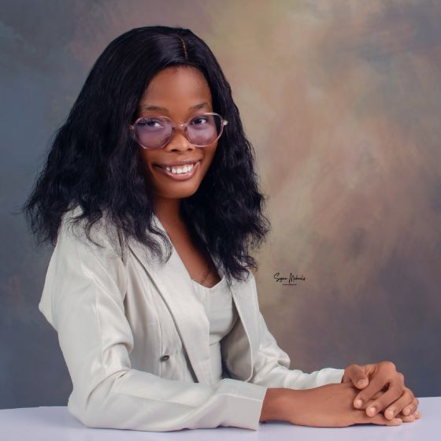

EEG Analysis · Machine Learning · Neuroengineering
Graduate student working at the intersection of neuroscience, computational modelling, and machine learning.
Focused on EEG analysis, brain stimulation modelling, and clinically relevant AI systems.
Ultrasound neuromodulation and sleep spindle research.